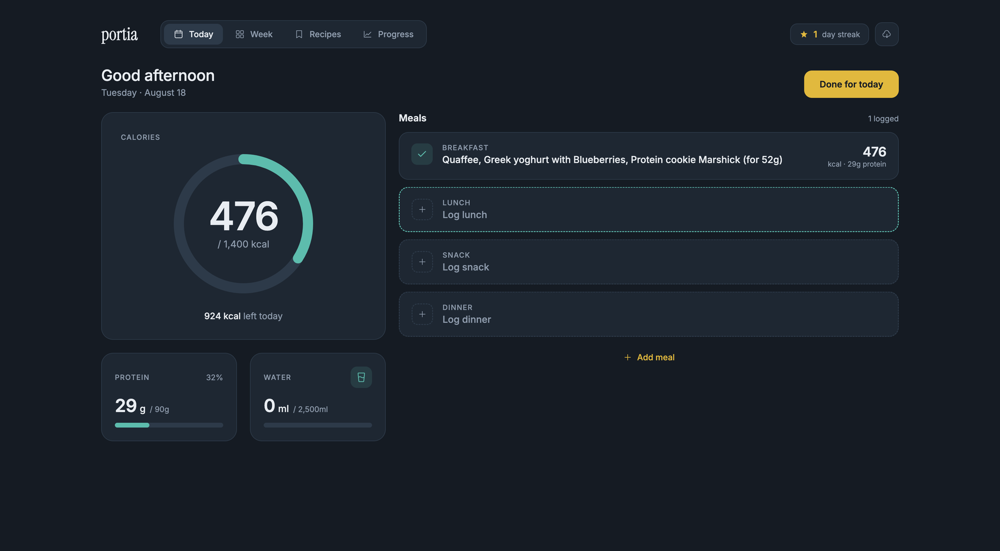
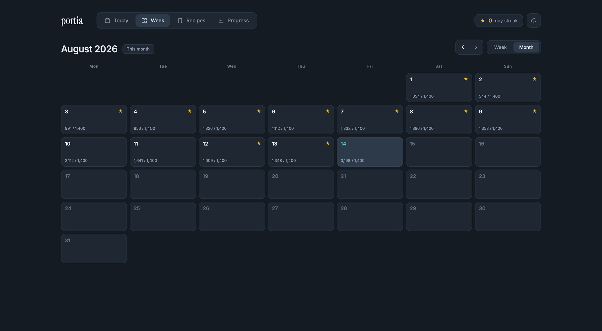
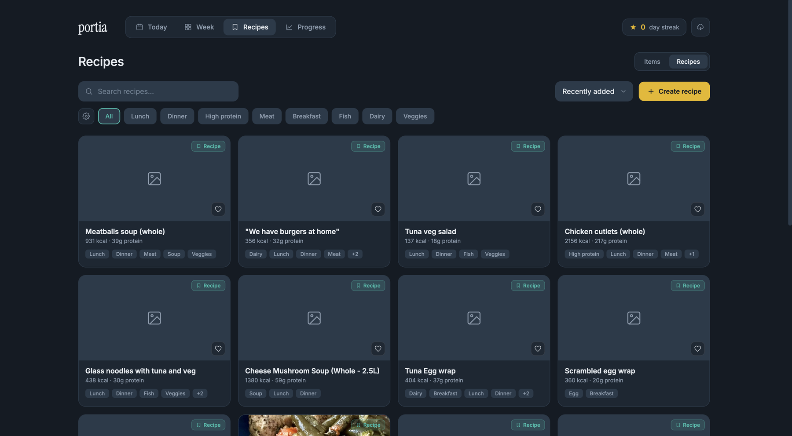
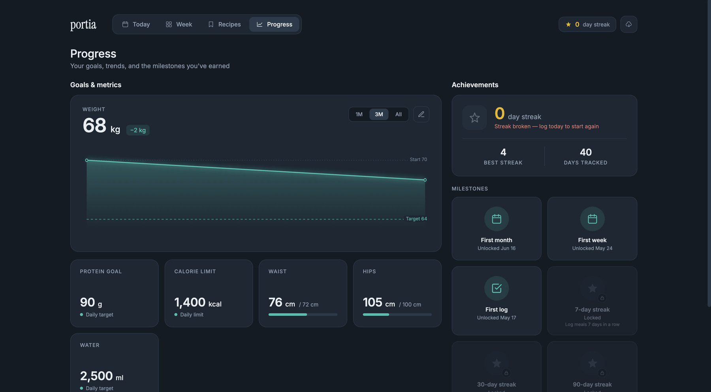
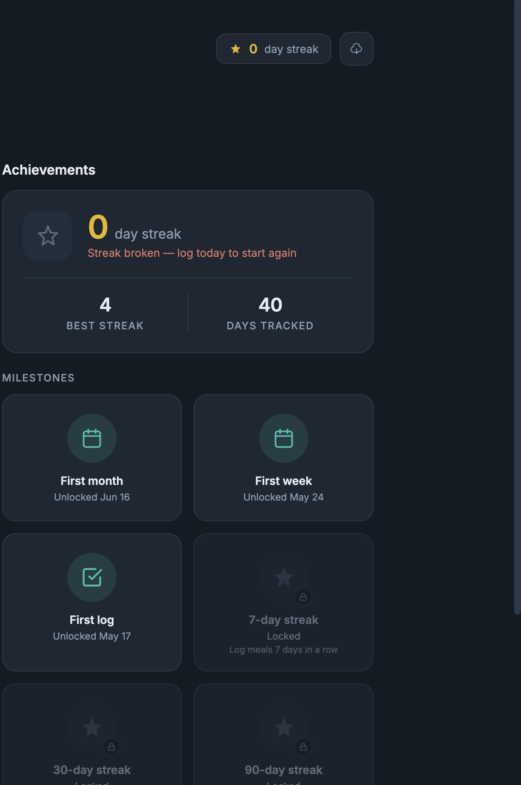
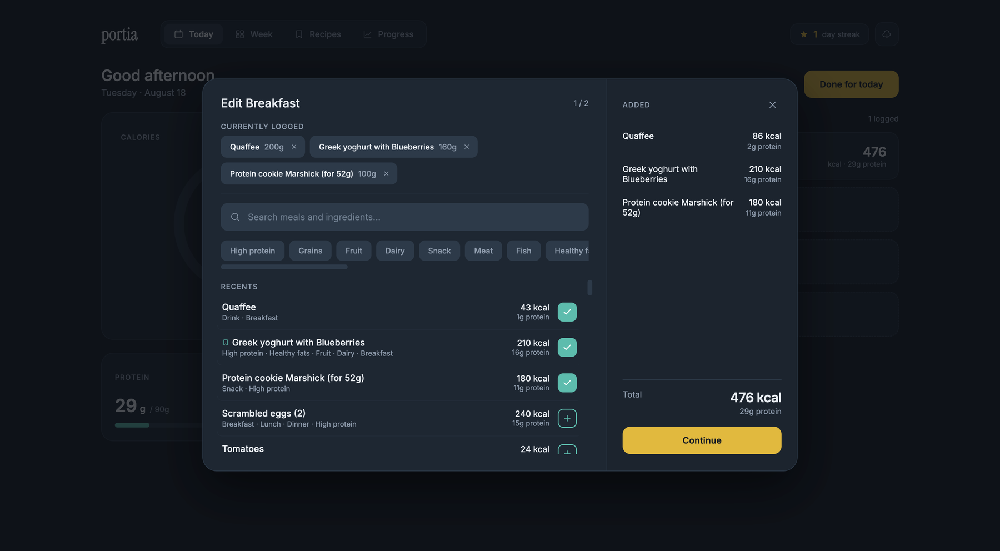

Portia: a food diary built (almost) without Figma
A solo nutrition-tracking web app, designed in Miro and Claude Design, built end to end with Claude Code.
Meet Nina. 35, product designer, spends her days juggling client work, pet projects, two enormous dogs, and the general chaos of adult life.
(That's me, hi.)
A while back I decided to eat a bit more intentionally — lose some weight before the wedding, and keep an eye on protein while I was at it.
Old habits kicked in first: a paper food diary. Got bored of writing the same meals and numbers every day within a week. Tried copy-pasting into a text file on my computer instead — also boring. Downloaded one of the well-known calorie-tracking apps — and that's where the real problems started:
- half the features I actually needed were subscription-only;
- the app was cluttered with ads and features I personally didn't need;
- the built-in food database was convenient in theory, but confusing in practice — 23 entries for "Tomato," 144 for "Rye bread."
That's when I remembered I'm a designer, and I happen to have a Claude Code subscription. So the idea for a simple online food diary was born.
The first sketch started in Figma, out of habit. But partway through, I realized I could fit "all the things I actually need" into this one pet project — and Figma stayed a draft. Research, the CJM, and structure came together in Miro, the look came out of a few sessions with Claude Design, and the app itself came to life with Github, Claude Code, and Visual Studio. That's how Portia happened.
Portia has 4 pages:
- Today — log what you ate, see how many calories and protein you have left to hit;
- Week — check in and give yourself credit for a week without slipping;
- Recipes — every product and recipe in one place;
- Progress — the results of all that hard work.
Empty in the morning, filling up meal by meal, and a clear nudge — not a guilt trip — when you go over.


A month view so a bad Tuesday doesn't erase a good week.

Products and recipes live side by side, so logging a home-cooked meal is as fast as scanning a barcode.


Goals, metrics, and the small wins along the way.


Add meal → edit it (search, tags, recents) → confirm the portion (whole, half, or a custom amount). Three taps, no dead ends.



Scan a product and it's added with the right numbers already filled in — or it tells you it doesn't recognize the code yet, no dead-end error screen.
Add an item, create a recipe (with a notes field for the little tweaks — "used oat milk instead"), or set a weight goal — all handled in quick modals, no separate pages to lose your place on.


The mobile MVP is stripped down to three functions: see today's calorie limit, log a meal, add a new product.
From idea to MVP to the first logged day in a working app took 4 weeks.
Future plans are split into phases — I'll keep updating this page as the app evolves.
I built a separate demo version just for the portfolio — feel free to click around without saving any of your own data.


Let's talk.
Reach out if you're building something and want a senior pair of eyes on it. I read everything that comes in.